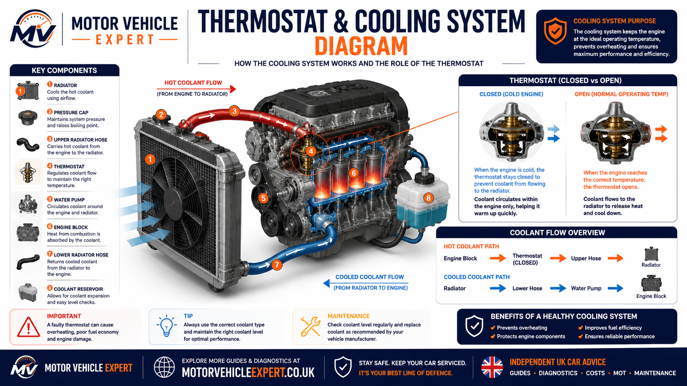
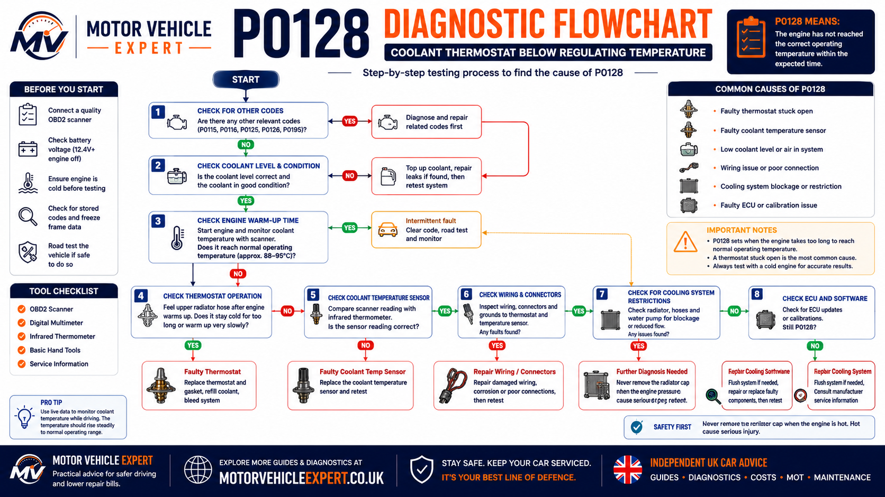
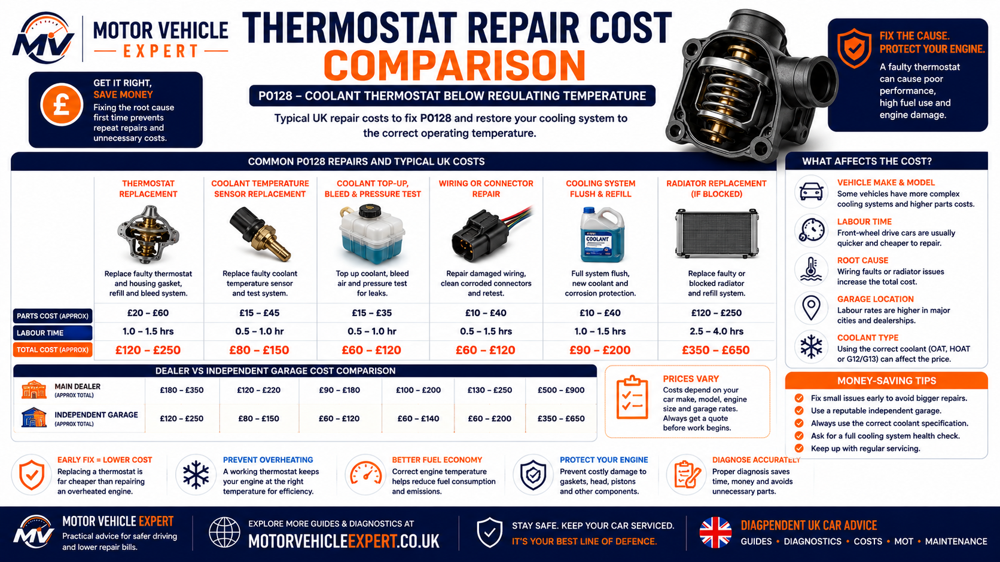

What does the P0128 code mean?
P0128 means the engine control module has detected that the engine coolant is not reaching its expected regulating temperature quickly enough. The fault description is commonly shown as “Coolant Thermostat Below Regulating Temperature”.
The most common cause is a thermostat stuck partly or fully open. This allows coolant to circulate through the radiator too early, so the engine warms more slowly than the ECU expects. However, low coolant, trapped air, an inaccurate coolant-temperature sensor, damaged wiring or an incorrect thermostat can produce a similar result.
What The ECU Detected
Coolant temperature remained below the expected regulating range for too long after startup.
Thermostat Stuck Open
Coolant begins flowing through the radiator before the engine has reached normal operating temperature.
Short Driving May Be Possible
Continued driving should only be considered when coolant level is correct and the engine is not overheating.
Thermostat Replacement
A standard thermostat replacement commonly costs around £120–£250, depending on access and vehicle design.
Treat P0128 as evidence of an abnormal warm-up pattern, not automatic proof that the thermostat has failed. Confirm coolant level, sensor plausibility, warm-up behaviour and thermostat operation before replacing parts.
What P0128 means in practical terms
The ECU expects the engine to warm at a predictable rate after a cold start. It compares coolant temperature with operating time, intake-air temperature, engine load, road speed and other data. If the coolant remains colder than expected after the required conditions are met, P0128 may be stored.
The code does not necessarily mean the engine is dangerously cold. It means the warm-up behaviour falls outside the programmed expectation. This may affect fuel control, heater performance, emissions-system operation and long-term efficiency.
Temperature Rises Too Slowly
The engine takes longer than expected to reach its normal operating range after startup.
Temperature Remains Too Low
Coolant temperature may rise initially but remain below the intended regulating range during normal driving.
The Reading May Be Incorrect
A faulty sensor, damaged connector or wiring fault can make the ECU believe the engine is colder than it really is.
P0128 identifies a temperature-control problem. It does not identify the failed component. The thermostat is common, but the complete cooling system and coolant-temperature circuit should be assessed before repairs are authorised.
What a typical P0128 fault looks like in practice
In many workshop cases, the driver first notices an engine-management light, weak cabin heating or slightly worse fuel economy. The car may still start and drive normally, which is why the fault is often ignored for too long.
On a scan tool, the coolant temperature usually rises smoothly but more slowly than expected. It may struggle to reach the vehicle's normal operating range or fall noticeably during motorway driving when cold airflow passes through the radiator.
A thermostat stuck open is often responsible, but I would still check coolant level, recent repair history, cold-start sensor readings, heater operation and related fault codes before ordering parts.
Pattern More Consistent With A Thermostat Fault
The coolant level is correct, the live reading rises smoothly, the heater is slow to warm and temperature falls during faster driving.
Pattern More Consistent With A Sensor Or Wiring Fault
The reading jumps suddenly, starts at an implausible value, changes intermittently or disagrees significantly with physical temperature.
If the upper radiator hose begins warming very early after a genuine cold start, coolant may already be passing through the radiator because the thermostat is not closing correctly.
How the engine cooling system controls temperature
The cooling system does more than prevent overheating. It must help the engine warm quickly, maintain a stable operating temperature and remove excess heat under load. Correct temperature control supports fuel economy, emissions, cabin heating, lubrication and long-term engine reliability.
1. The Engine Produces Heat
Combustion creates heat inside the cylinder head and engine block. Coolant absorbs part of this heat.
2. The Water Pump Circulates Coolant
The pump moves coolant through internal passages, the heater circuit and the wider cooling system.
3. The Thermostat Controls Radiator Flow
Radiator flow is restricted while the engine is cold and increased progressively as temperature rises.
4. The Radiator Releases Excess Heat
Airflow removes heat from coolant before it returns to the engine through the lower-temperature side of the circuit.
Maintains Coolant Circulation
The water pump moves coolant through the engine, heater matrix and radiator circuit. Poor circulation can create unstable temperatures.
Removes Excess Heat
The radiator transfers heat from the coolant into passing air once the thermostat allows full circulation.
Allows Coolant Expansion
The expansion tank accommodates coolant volume changes and provides a visible level-check point on many vehicles.
Provides Cabin Heat
Hot coolant passes through the heater matrix. Weak heating can be an early clue that the engine is not reaching temperature.
Reports Coolant Temperature
The coolant-temperature sensor provides data used for fuel control, fan operation, warning systems and fault monitoring.
Supports Cooling At Low Speed
The electric fan draws air through the radiator when natural road airflow is insufficient, especially in traffic.

When the engine is cold, radiator flow is restricted so temperature rises quickly. As the coolant reaches the thermostat's rated opening range, the valve opens progressively and allows excess heat to be released through the radiator.
Never open the cooling system while it is hot or pressurised. Hot coolant can escape suddenly and cause severe burns. Allow the engine to cool fully before checking level or removing a pressure cap.
How the coolant thermostat works
The thermostat is a temperature-controlled valve positioned between the engine and radiator circuit. Its purpose is to help the engine warm quickly and then regulate coolant flow so operating temperature remains stable.
Thermostat Closed
When the engine is cold, the thermostat remains closed or mostly closed. Coolant circulates mainly through the engine and heater circuit.
Thermostat Opens Progressively
As coolant reaches the rated temperature, the thermostat opens and allows controlled flow through the radiator.
Thermostat Stuck Open
Coolant reaches the radiator too early, causing slow warm-up, weak heating and lower-than-expected cruising temperature.
Thermostat Stuck Closed
Coolant cannot circulate through the radiator correctly, increasing the risk of rapid overheating and engine damage.
When the engine remains cooler than intended, the ECU may continue using warm-up enrichment for longer. This can increase fuel use, emissions and oil contamination while delaying heater performance.
What is a normal engine operating temperature?
Normal operating temperature varies by manufacturer, engine design, thermostat rating, ambient temperature and driving conditions. Many modern engines commonly operate from the high 80s Celsius into the low 100s Celsius once fully warm, but vehicle-specific service data should always be used.
Close To Ambient Temperature
Initial plausibility checkAfter a long cold soak, coolant and intake-air temperature readings should normally be reasonably close to the surrounding air temperature.
Steady Temperature Increase
Smooth rise expectedCoolant temperature should increase progressively without sudden jumps, unexplained drops or long low-temperature plateaus.
Stable Regulating Range
Vehicle specification appliesOnce warm, the temperature should remain reasonably stable rather than falling sharply whenever road speed increases.
Do not rely only on the dashboard gauge. Many gauges are deliberately damped and remain near the centre across a broad temperature range. Scan-tool data provides a much clearer picture of actual warm-up behaviour.
Symptoms commonly seen with a P0128 fault
The symptoms caused by P0128 often develop gradually because the engine usually continues to run normally. Many drivers only discover the problem after the engine management light appears during routine driving. Others notice weaker cabin heating, reduced fuel economy or a temperature gauge that never quite reaches its normal position.
Although P0128 is usually associated with an engine running too cool rather than overheating, it should never be ignored. Prolonged operation below the intended temperature can increase engine wear, reduce fuel efficiency and allow small cooling-system problems to become more expensive repairs.
Engine Management Light
The engine warning light is often the first indication that the ECU has detected abnormal coolant-temperature behaviour.
Poor Cabin Heater Performance
Because the coolant warms more slowly, the heater may take much longer to produce warm air during cold weather.
Higher Fuel Consumption
The ECU may continue using warm-up fuel enrichment for longer than intended, increasing fuel usage.
Gauge Stays Low
The temperature gauge may rise slowly or remain below its normal position during everyday driving.
Temperature Drops At Speed
Extra airflow through the radiator can cool the engine further if the thermostat is stuck open.
Slightly Sluggish Running
Most vehicles still drive normally, but throttle response and efficiency may feel slightly reduced.
One symptom alone rarely confirms P0128. A combination of slow warm-up, weak heater performance, falling motorway temperature and live-data readings provides a much stronger diagnostic picture.
What causes the P0128 code?
Although a thermostat stuck open is responsible for many P0128 faults, experienced technicians avoid replacing parts until the complete cooling system has been assessed. Several different faults can produce the same temperature behaviour.
Thermostat Stuck Open
The thermostat allows coolant to circulate through the radiator too early, slowing engine warm-up.
Low Coolant Level
Insufficient coolant can affect circulation and cause inaccurate temperature readings within the cooling system.
Coolant Temperature Sensor
An inaccurate ECT sensor can report incorrect coolant temperatures to the engine control module.
Damaged Wiring
High resistance, damaged connectors or broken wiring can distort coolant-temperature signals.
Incorrect Thermostat
An incorrectly rated aftermarket thermostat may never allow the engine to reach its intended operating temperature.
Air Trapped In The System
Air remaining after previous repairs can interfere with coolant circulation and temperature sensing.
When P0128 may NOT be a thermostat fault
One of the biggest mistakes made by inexperienced technicians is replacing the thermostat without proving that it is actually faulty. While the thermostat is a common cause, several other faults can trigger exactly the same diagnostic code.
Check These Before Replacing Parts
- ✓Coolant level and coolant condition.
- ✓Freeze-frame data.
- ✓Related fault codes.
- ✓Cold-start coolant temperature.
- ✓Sensor plausibility.
- ✓Wiring and connector condition.
Replace The Thermostat Only After
- ✓Confirming slow warm-up.
- ✓Checking coolant circulation.
- ✓Comparing live data.
- ✓Verifying sensor accuracy.
- ✓Inspecting previous repair history.
- ✓Checking manufacturer service information.
Replacing the thermostat without checking coolant level, sensor readings and live data can waste both time and money. Correct diagnosis should always identify the root cause before parts are ordered.
How a technician diagnoses P0128 correctly
A proper diagnosis follows a logical sequence rather than replacing parts based on the stored code description. Professional technicians normally begin with a completely cold engine before comparing live temperature readings with actual engine conditions.
1. Scan The ECU
Read all stored and pending fault codes together with freeze-frame information.
2. Check Coolant
Verify coolant level, coolant condition and check for visible leaks before starting the engine.
3. Monitor Live Data
Observe coolant temperature from a genuine cold start and compare it with intake-air temperature.
4. Confirm The Repair
Road test the vehicle after repairs and verify that normal operating temperature is reached without the code returning.

Following a structured diagnostic process reduces unnecessary parts replacement and helps identify thermostat, coolant, sensor and wiring faults in the correct order.
What live coolant-temperature data should show
Live data is one of the most valuable diagnostic tools when investigating P0128. Rather than relying solely on the dashboard gauge, technicians monitor the coolant-temperature sensor throughout the complete warm-up cycle.
Plausible Initial Reading
Coolant temperature should usually be close to the surrounding ambient temperature before the engine starts.
Smooth Temperature Rise
The temperature should increase steadily without sudden jumps, unexplained drops or unrealistic fluctuations.
Stable Operating Temperature
After reaching normal operating temperature the reading should remain relatively stable throughout normal driving.
Compare coolant temperature with intake-air temperature before starting the engine. If the vehicle has been parked overnight, both readings should normally be very similar. A large difference before the engine has even started often suggests a sensor or wiring problem rather than a thermostat fault.
Can you drive with a P0128 code?
In many cases, yes—but only for a short period while arranging diagnosis. P0128 normally indicates that the engine is running cooler than intended rather than dangerously hot. Many vehicles remain fully driveable, but continuing to ignore the fault can increase fuel consumption, emissions, engine wear and the likelihood of further cooling-system problems.
Before deciding to drive, confirm that the coolant level is correct, there are no visible leaks, the temperature gauge behaves normally and there are no signs of overheating. If the engine begins overheating, loses coolant rapidly or displays additional warning lights, stop driving immediately.
Engine Runs Normally
The coolant level is correct, the temperature remains stable, there are no leaks and the engine drives normally.
Monitor Closely
Drive only while monitoring coolant temperature, warning lights and heater performance until repairs can be arranged.
Signs Of Overheating
Do not continue driving if coolant temperature rises rapidly, steam appears, coolant is leaking or the engine overheats.
A thermostat stuck open usually causes the engine to run too cool, but never assume P0128 is harmless. Always rule out coolant loss, trapped air, water-pump faults and other cooling-system failures before continuing to drive.
P0128 vs engine overheating
Many drivers assume P0128 means the engine is overheating, but the opposite is usually true. The code normally indicates that the engine is taking too long to warm up or is operating below its intended regulating temperature.
However, some faults capable of triggering P0128—such as coolant loss, trapped air or poor coolant circulation—may eventually develop into overheating if they are ignored. That is why the entire cooling system should always be inspected rather than replacing the thermostat automatically.
Typical P0128 Pattern
- ✓Slow warm-up.
- ✓Weak cabin heating.
- ✓Lower-than-normal coolant temperature.
- ✓Temperature falls during motorway driving.
- ✓No obvious overheating.
Possible Overheating Pattern
- !Rapid temperature increase.
- !Steam from the engine bay.
- !Coolant loss.
- !Cooling fan operating continuously.
- !Temperature warning displayed.
If the temperature warning light appears, steam becomes visible or coolant is escaping from the vehicle, stop the engine as soon as it is safe to do so. Continuing to drive an overheating engine can cause severe cylinder-head, gasket and engine damage.
Will P0128 cause an MOT failure?
P0128 itself is not an MOT test item. However, the fault can contribute to an MOT failure if it causes an emissions-related engine-management warning light to remain illuminated or if poor engine temperature control results in excessive exhaust emissions.
Modern petrol and diesel vehicles rely on correct operating temperature for efficient combustion, catalytic-converter performance and emissions control. An engine that never reaches its intended temperature may therefore affect emissions testing.
Possible MOT Failure
An illuminated emissions-related malfunction indicator lamp can result in an MOT failure on many modern vehicles.
Possible Increase
Running below normal operating temperature may increase emissions and reduce catalyst efficiency.
Repair Before Testing
Diagnosing and repairing P0128 before the MOT reduces the chance of warning-light or emissions-related failures.
Clearing the fault code immediately before an MOT without repairing the underlying problem is unlikely to provide a permanent solution. If the fault remains, the engine-management light may return during subsequent driving.
Typical P0128 repair costs in the UK
The total repair cost depends on what is actually causing the fault. A conventional thermostat replacement is often relatively inexpensive, while integrated thermostat housings, coolant leaks, electrical faults or more complex cooling-system repairs can increase both labour time and parts costs.
Professional Diagnosis
Fault-code reading, freeze-frame analysis and live-data testing.
£40–£120Standard Thermostat
Typical replacement including coolant top-up on many common vehicles.
£120–£250Integrated Housing
Some modern engines require replacement of the complete thermostat housing assembly.
£250–£500+Coolant Temperature Sensor
Replacement sensor including diagnosis where required.
£70–£180Coolant Leak Repair
Prices vary depending on the source of the leak and component replacement.
£100–£600+Electrical Repairs
Connector or wiring repairs after electrical diagnosis.
£80–£300+
A thermostat replacement is the most common repair, but accurate diagnosis should always come first. Replacing the wrong component may cost more than paying for proper testing.
Ask the garage to confirm the fault using live coolant-temperature data before replacing parts. Spending a small amount on accurate diagnosis often prevents unnecessary thermostat, sensor or wiring replacement.
Common diagnostic mistakes with P0128
Many unnecessary repairs happen because technicians or owners assume the thermostat is automatically at fault. The diagnostic code identifies abnormal temperature behaviour—not the failed component.
Common Mistakes
- !Replacing the thermostat without checking coolant level.
- !Ignoring freeze-frame information.
- !Not comparing cold-start temperature readings.
- !Overlooking trapped air after previous repairs.
- !Ignoring manufacturer bleed procedures.
- !Using an incorrect thermostat specification.
Professional Approach
- ✓Inspect coolant level first.
- ✓Analyse freeze-frame data.
- ✓Monitor live warm-up behaviour.
- ✓Check sensor accuracy.
- ✓Verify thermostat operation.
- ✓Confirm repairs with a road test.
The cheapest repair is often the one performed correctly the first time. Systematic diagnosis is almost always less expensive than replacing multiple parts based on assumptions.
Should you buy a used car with a P0128 code?
A used car with P0128 is not automatically a bad purchase. In many cases, the fault is caused by a thermostat stuck open and can be repaired without major engine work. The buying risk depends on whether the cooling system is full, the engine has overheated, the seller can provide repair evidence and the vehicle warms up normally during a proper cold-start inspection.
Do not accept the explanation that the warning light only needs clearing. The fault should be diagnosed before purchase, and the likely repair cost should be reflected in the asking price. A straightforward thermostat fault and a neglected cooling system can initially produce similar warning lights but very different repair bills.
Confirmed Thermostat Fault
The coolant level is stable, there is no overheating history and a garage has confirmed that the thermostat is not regulating correctly.
Diagnosis Not Yet Completed
Allow for professional diagnosis, thermostat or housing replacement, correct coolant and system bleeding when calculating your offer.
Overheating Or Coolant Loss
Repeated overheating, contaminated fluids, pressurisation, white exhaust smoke or unexplained coolant loss may indicate a much more serious fault.
Checks Before Starting The Engine
- ✓Inspect the vehicle when the engine is completely cold.
- ✓Check coolant level and visible staining around hoses and housings.
- ✓Look for oil or coolant contamination.
- ✓Confirm the warning lights illuminate correctly at startup.
- ✓Ask for cooling-system repair invoices.
Checks During The Test Drive
- ✓Monitor how quickly cabin heat becomes available.
- ✓Watch the temperature gauge for unusual movement.
- ✓Check whether temperature falls during faster driving.
- ✓Listen for excessive cooling-fan operation.
- ✓Recheck for leaks and coolant smells after the drive.
Be cautious if the seller refuses a cold-start inspection, discourages diagnostic scanning or cannot explain repeated coolant loss. Independent diagnosis is sensible before buying any vehicle with an unresolved cooling-system warning.
Useful buying support: used car inspection checklist, used car test-drive checklist and questions to ask a used-car seller.
Which cars can be affected by P0128?
P0128 is a generic OBD-II fault code and can appear on many petrol, diesel and hybrid vehicles. It is not restricted to one manufacturer or engine family. The exact repair depends on thermostat design, cooling-system layout, sensor strategy and access around the engine.
The vehicle examples below are broad UK-market groups where technicians may encounter P0128 as cars age. They do not mean every model or engine is prone to the fault, and diagnosis must always be based on the exact registration, engine code and live test results.
Ford Petrol And Diesel Models
P0128 can appear on Fiesta, Focus, Mondeo, Kuga, S-Max, Galaxy and Transit-based vehicles where thermostats, housings or coolant sensors have aged.
Vauxhall Models
Corsa, Astra, Insignia, Mokka and Zafira vehicles can develop slow warm-up faults involving the thermostat, sensor or cooling circuit.
Volkswagen, Audi, SEAT And Škoda
TSI and TDI applications may use integrated thermostat and water-pump modules, making diagnosis and labour time highly engine-specific.
BMW And MINI
Some models use electronically controlled thermostats or electric water pumps, so fault-code and live-data diagnosis is especially important.
Mercedes-Benz
Ageing thermostats, sensors, connectors and plastic cooling components can cause abnormal warm-up behaviour on higher-mileage vehicles.
Peugeot, Citroën, DS And Fiat
Thermostat housings, sensor circuits, coolant leaks and bleeding issues should all be considered before parts are replaced.
Renault And Nissan
P0128 may appear on petrol and diesel models where thermostat regulation, coolant level or temperature sensing is outside specification.
Toyota And Lexus
Although many cooling systems are durable, thermostats and coolant-temperature sensors can still deteriorate with age and mileage.
Hyundai And Kia
Thermostat, sensor and coolant-circulation faults can develop as vehicles age, especially where maintenance history is incomplete.
Never order a thermostat using the fault code alone. Confirm the registration, engine code, thermostat opening specification, housing design, coolant type and correct bleeding procedure for the exact vehicle.
Why P0128 diagnosis differs between manufacturers
The generic code definition remains the same, but vehicle manufacturers use different thermostat designs, coolant circuits, sensor strategies and bleeding procedures. Some engines use a conventional wax thermostat, while others use electrically heated thermostats, integrated housings, multiple coolant valves or electric water pumps.
Wax-Type Thermostats
Many vehicles use a mechanical thermostat that opens according to coolant temperature. Testing focuses on warm-up rate and radiator flow.
Mapped Thermostats
Some engines use an electrically heated thermostat controlled by the ECU, requiring circuit checks and manufacturer data.
Thermostat Housing Modules
The thermostat may be supplied only with a complete plastic or metal housing containing sensors, valves or pipe connections.
Electronically Controlled Cooling
Vehicles with electric water pumps may require pump-speed, communication and control checks alongside thermostat diagnosis.
Correct Fluid Is Essential
Using an incompatible coolant can affect corrosion protection, seals and long-term cooling-system reliability.
Air Removal Varies
Some systems self-bleed, while others need vacuum filling, bleed screws, diagnostic activation or a specific warm-up procedure.
A thermostat that physically fits may still have the wrong opening temperature or control strategy. Always use vehicle-specific service information and approved coolant before carrying out repairs.
Best mechanic-style advice for P0128
Treat P0128 as a temperature-regulation problem rather than a thermostat replacement instruction. The code confirms that the ECU is unhappy with the warm-up pattern, but further testing is needed to identify why.
The best evidence comes from a genuine cold start. Check coolant level, compare coolant and intake-air temperature, monitor the complete warm-up curve and observe what happens during steady road-speed driving. This separates a mechanical thermostat fault from inaccurate sensor data much more reliably than the dashboard gauge.
Check Coolant Safely
Confirm level and condition only when the engine is completely cold, then investigate any evidence of loss.
Record Cold-Start Data
A complete warm-up trace provides stronger evidence than a stored code or dashboard gauge alone.
Verify The Repair
Fill and bleed correctly, road test from cold and confirm stable temperature without the warning light returning.
A smooth but unusually slow temperature rise usually supports a thermostat that is allowing too much radiator flow. Sudden, erratic or implausible readings are more consistent with a sensor, connector or wiring fault.
What every driver should remember about P0128
Main Diagnostic Points
- ✓P0128 means the engine is warming too slowly or staying too cool.
- ✓A thermostat stuck open is the most common cause.
- ✓Low coolant, trapped air, sensor and wiring faults must also be checked.
- ✓Cold-start live data is central to accurate diagnosis.
- ✓The repair should be confirmed with a complete road test.
Warning Signs Never To Ignore
- !Coolant repeatedly disappearing.
- !Steam or visible coolant leakage.
- !A rapidly rising temperature gauge.
- !The heater suddenly becoming cold.
- !Oil or coolant contamination.
Use the correct order: scan all codes, save freeze-frame information, check coolant, compare cold sensor readings, monitor warm-up, verify thermostat operation, inspect wiring and confirm the repair from cold.
Related fault-code, cooling-system and repair guides
Continue through the Motor Vehicle Expert diagnostic and cooling-system guides for related warning lights, component faults, maintenance advice and UK repair costs.
Fault-Code Guides
Cooling-System Repairs
Warning Lights And MOT
Maintenance Guides
Used-Car Support
Diagnostic Support
P0128 code FAQs
These fifteen visible questions match the fifteen questions included in the FAQ structured data in the page head.
What does the P0128 code mean?
P0128 means the engine control module has detected that the coolant is not reaching the expected regulating temperature quickly enough. A thermostat stuck open is common, but coolant level, sensor data, wiring and wider cooling-system faults should also be checked.
What is the most common cause of P0128?
The most common cause is a thermostat stuck partly or fully open, allowing coolant to circulate through the radiator before the engine has warmed properly.
Does P0128 always mean the thermostat is faulty?
No. P0128 can also be caused by low coolant, trapped air, an inaccurate coolant-temperature sensor, damaged wiring, an incorrect thermostat, cooling-system restrictions or an ECU calibration issue.
Can I drive with a P0128 code?
Short careful driving may be possible if the coolant level is correct, the engine is not overheating and the temperature remains stable. Continued driving should be limited until the fault is diagnosed.
Can P0128 cause overheating?
P0128 usually indicates slow warm-up or an engine running too cool. However, low coolant, trapped air, poor circulation, water-pump faults or cooling-system restrictions can also cause overheating and require urgent attention.
Can low coolant cause P0128?
Yes. Low coolant or trapped air can interfere with coolant circulation and temperature-sensor readings. The coolant level should only be checked when the engine is completely cold.
Can a coolant-temperature sensor cause P0128?
Yes. An inaccurate coolant-temperature sensor or damaged wiring can make the engine control module believe the engine is colder than it really is.
Can P0128 cause poor fuel economy?
Yes. If the engine remains below normal operating temperature, the ECU may continue using a richer warm-up strategy for longer, increasing fuel consumption and emissions.
Why does the temperature drop during motorway driving?
A thermostat that is stuck open can allow excessive coolant flow through the radiator. Increased road airflow may then reduce coolant temperature more than expected.
Will P0128 fail an MOT?
P0128 may contribute to an MOT failure if it causes an emissions-related engine-management warning light, excessive emissions, poor running or another testable defect.
How much does P0128 cost to repair in the UK?
Diagnosis commonly costs around £40–£120. A standard thermostat replacement often costs around £120–£250, while integrated housings, difficult access, sensor faults or wiring repairs can cost more.
Should I replace the thermostat immediately for P0128?
No. The thermostat is a common cause, but coolant level, related codes, cold-start sensor readings, warm-up behaviour, wiring and cooling-system condition should be checked first.
Can P0128 return after replacing the thermostat?
Yes. P0128 can return if the wrong thermostat was fitted, the system was not bled correctly, coolant remains low, the sensor is inaccurate or the original diagnosis was incomplete.
Should I buy a used car with a P0128 code?
A confirmed thermostat fault may be manageable, but buyers should be cautious where there is coolant loss, repeated overheating, no repair evidence, contaminated fluids or a seller who refuses a cold-start inspection.
How is a P0128 repair confirmed?
The cooling system should be filled and bled correctly, the engine warmed from cold, live coolant temperature monitored and the vehicle road tested to confirm stable operating temperature without the code returning.
Confirm the root cause before replacing parts, never open a hot pressurised cooling system and always verify stable operating temperature after the repair.
Looking after an engine with a P0128 fault
P0128 is often one of the more manageable engine-management faults, but it still deserves proper diagnosis. A thermostat stuck open is common, yet replacing it without checking coolant level, sensor data, wiring and previous repair history can waste money and leave the warning light unresolved.
A correctly operating engine should warm steadily, reach its specified regulating range and maintain a reasonably stable temperature during normal driving. Repairing P0128 restores heater performance, fuel control, emissions efficiency and long-term engine operation.
Diagnose from cold, repair the confirmed cause, use the correct coolant and thermostat specification, bleed the system properly and verify the result with live data and a complete road test.